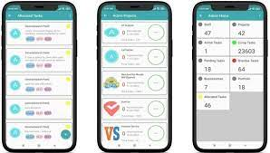

Hello there!!
Welcome to my website

My name is Seraphina Andeyo, and I am a 21-year-old third-year computer science student at the Mighty Kisii University.
I am very passionate about the tech world and hope to come up with solutions to help the world.
I also love singing; it brings out a part of me that I cherish.
You gotta listen to me one day!
As a computer science student, my work revolves around the study and application of computer-related concepts, algorithms, and technologies. I'm actively engaged in learning and working on various aspects of computer science, including:
My goal is to gain a deep understanding of computer science principles, enhance my problem-solving skills, and prepare for a career where I can create innovative solutions to real-world challenges and contribute to the ever-evolving field of technology.
I developed a personal blog website where I share my thoughts and insights on the latest tech trends, programming tutorials, and product reviews. The website features a user-friendly design, responsive layout, and a comments section for interaction with readers.

I conducted academic research on the performance and comparative analysis of machine learning algorithms for image recognition. The project involved data collection, algorithm implementation, and a comprehensive report on the findings.

I created a mobile app for task management, "TaskEase," which allows users to create, organize, and track tasks and to-do lists. The app features user authentication, notifications, and synchronization across multiple devices.

NAME:Seraphina Andeyo
EMAIL:andeyoseraphina@gmail.com
PHONE: 0114653997
INSTAGRAM: seraphinaandeyo.instalikes
As a computer science student, I possess a strong foundation in
programming, web development, algorithms, and problem-solving.
My academic projects and internships have honed my skills
, and I'm committed to continuous learning and contributing to innovation
in the tech industry.
Degree in Computer Science
The Mighty Kisiii University
Located near the famous Kisii Highlands
Software Developer Intern
Company Name, Date - Present
Implemented and tested software solutions, collaborating with cross-functional teams to deliver efficient and user-friendly applications.
Academic Projects
Developed and executed various coding projects, demonstrating proficiency in programming, algorithms, and web development.
Web Development Intern
The HighTech Company located in Nairobi
15th May 2023-15th October2023
Collaborated with the development team to build and maintain websites, improving user experience and ensuring site functionality.
Research Assistant
Kenya Agricultural Research Institute,
115th May 2020-15 October 2022
Assisted in research projects, conducted experiments, and analyzed data, contributing to the publication of research papers.
Email: your@email.com
Phone: (123) 456-7890
LinkedIn: linkedin.com/in/yourname